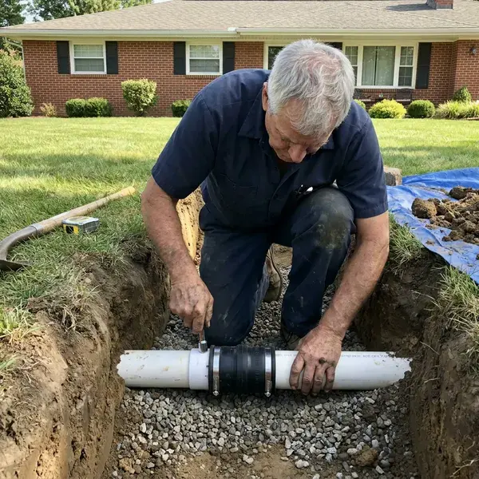

Sewer Line Replacement in San Buenaventura (Ventura), CA
Don't let a broken sewer line disrupt your San Buenaventura (Ventura), CA home. FKM Plumbing offers professional sewer line replacement services for lasting peace of mind.
- Fast Camera Diagnosis
- Trenchless Options Available
- Quick, Reliable Service
- Upfront Pricing

Replace Your Failing Sewer Line Once and Do It Right in San Buenaventura (Ventura), CA.
Let our experienced team resolve your sewer line problems quickly and correctly.
Your Go-To for Sewer Line Replacement in San Buenaventura (Ventura), CA
For homeowners in San Buenaventura (Ventura), CA, a failing sewer line is a serious concern. FKM Plumbing uses advanced diagnostic tools to pinpoint issues and offers durable replacement options tailored to your property.
Our expertise includes:
- Open-trench replacement with proper slope and bedding
- Code Compliant Installations
- Trenchless pipe bursting with fused HDPE pipe

Additional Drain Services Services in San Buenaventura (Ventura), CA
From stubborn kitchen clogs to main sewer backups, our drain services in San Buenaventura (Ventura), CA restore full flow fast and keep it that way.


Customers
Why Choose FKM Plumbing for Sewer Line Replacement in San Buenaventura (Ventura), CA?
Choosing the right contractor for sewer line replacement is crucial for the life of your plumbing system. We make sure all work meets local San Buenaventura (Ventura), CA building codes and standards.
- Transparent Pricing, You'll receive a clear, upfront estimate before any work begins, with no surprise charges.
- Site Restoration, We backfill, compact and restore the work area as part of the project.
- Code Compliance, All our sewer line replacements follow San Buenaventura (Ventura) and Southern California plumbing codes and regulations.
Citywide Coverage
We understand the differences between areas within San Buenaventura (Ventura) when it comes to plumbing infrastructure. Our local knowledge helps us provide sewer line replacement tailored to the demands of your property.
Experienced Team
With years of hands-on experience, our technicians at FKM Plumbing are skilled at diagnosing complex sewer line issues and completing precise replacements with minimal disruption to your property.
Safety-First Approach
All our sewer line replacement work in San Buenaventura (Ventura), CA is performed in full compliance with local safety standards and building codes. We obtain all necessary permits for a safe, legal installation.
Trusted Certified San Buenaventura (Ventura) Plumbing Services Professionals
At FKM Plumbing, we take pride in providing certified plumbing services throughout San Buenaventura (Ventura), CA. Backed by leading industry credentials, our experienced plumbers combine technical skill with genuine customer care. Whether it is repair, installation, or maintenance, we follow strict safety and quality standards to deliver lasting results you can trust.
Call Us Now PHCC Plumbing Contractor Recognition
PHCC Plumbing Contractor Recognition Better Business Bureau (BBB) Accreditation
Better Business Bureau (BBB) Accreditation Angi Certified Pro
Angi Certified Pro ISO 9001 Quality Management Certification
ISO 9001 Quality Management CertificationDependable Sewer Line Replacement Services in San Buenaventura (Ventura), CA
Sewer Line Material Upgrades in San Buenaventura (Ventura)
Many older homes in San Buenaventura (Ventura) may have sewer lines made from outdated materials like clay or cast iron, which are prone to cracking, corrosion, and root invasion. We offer upgrades to newer, more durable materials such as PVC or HDPE (high-density polyethylene). These materials stand up to corrosion, roots, and shifting soil, giving your sewer system a much longer lifespan.

Permits and Code Compliance in San Buenaventura (Ventura), CA
Sewer line replacement is a major project that requires following local plumbing codes and often needs permits from San Buenaventura (Ventura) authorities. FKM Plumbing handles permit applications and makes sure every replacement job meets or exceeds municipal and state regulations in Southern California. Code here requires seismic strapping on water heaters and low-flow fixtures, and inspectors check both closely on remodels. This includes correct pipe sizing, depth, slope, and connection to the main sewer. Skipping permits or code requirements can lead to fines and rework, so we handle it professionally.
Trenchless Pipe Bursting in San Buenaventura (Ventura)
Pipe bursting replaces the old sewer line by pulling a new pipe through the path of the old one. A bursting head breaks the old pipe outward while fused HDPE pipe follows behind. This usually needs only an entry pit and an exit pit instead of a long trench. It works well under driveways, mature trees and landscaping. The new pipe is seamless, which leaves no seams for roots to enter.
Traditional Trench Sewer Line Replacement in San Buenaventura (Ventura)
For significant damage or certain pipe layouts, traditional trenching may be the most effective method. This involves digging a trench to access and replace the damaged sewer line directly. Our team carefully plans the excavation to minimize disruption to your landscape, using the right equipment for efficient, precise digging. We make sure of proper grading and backfilling to prevent future issues and restore your property.
Sewer Pipe Lining as an Alternative in San Buenaventura (Ventura)
Cured-in-place pipe lining creates a new pipe inside the old one. After cleaning, a resin-soaked liner is pulled in and cured in place. This works when the host pipe still holds its shape without major sags or collapse. Lining can be a good option under slabs or finished areas. We tell you plainly if your line is a candidate.
Preventative Measures After Replacement in San Buenaventura (Ventura)
Once your sewer line is replaced, we can recommend steps to extend its lifespan. This includes landscaping choices that won't interfere with your new pipes, proper waste disposal habits, and regular inspections. Expansive clay and hillside soils can shift over time, putting stress on slab plumbing and cracking older sewer joints. We also talk through how trees and soil movement near your home can affect the line and what you can do to minimize future risks. That keeps your new system in San Buenaventura (Ventura) trouble-free.
Sewer Line Replacement Cost in San Buenaventura (Ventura), CA
Cost depends on length, depth, soil type, access and the method used. Open-trench replacement in an open yard can be reasonably priced per foot, while trenchless methods may cost more per foot but save on restoration. Hardscape, landscaping and driveways change the math quickly. We give you a written estimate for each option after a camera inspection. That way you can compare the full cost, not just the headline price.

Partial Sewer Line Repair in San Buenaventura (Ventura), CA
Not every damaged sewer needs full replacement. If the camera shows a single break or one root-damaged joint, a spot repair may fix the problem. We locate the exact spot and depth, excavate a small area and replace that section. This costs much less than replacing the whole lateral. We only recommend it when the rest of the line is in sound condition.
Sewer Line Replacement Near Me in San Buenaventura (Ventura), CA
Our rapid response teams are located to provide quick, efficient sewer line replacement throughout San Buenaventura (Ventura) and surrounding areas. We aim to be the go-to local choice for reliable plumbing solutions.
Choosing a local company for sewer line replacement means faster scheduling and a team that knows local permit rules. We work with the San Buenaventura (Ventura) building department often. That helps keep your project on track.
FKM Plumbing at a Glance
- Fully licensed plumbing team covering San Buenaventura (Ventura), CA
- 24/7 emergency service with same-day scheduling
- Clear written estimates, no hidden fees
- 4.8-star rated by 754+ Southern California customers
San Buenaventura (Ventura) Map
San Buenaventura (Ventura) Information
- Population
- 109,058
- Area codes
- Local
- Service area
- San Buenaventura (Ventura) and communities within 40 miles
- Nearby
- Oxnard, Camarillo, Thousand Oaks, Santa Barbara
Aging clay, cast iron and Orangeburg laterals make professional sewer line replacement a smart long-term investment for homes in San Buenaventura (Ventura), CA.
Expert Services
Trust our professionals for reliable FKM Plumbing solutions in San Buenaventura (Ventura), CA.
Our Specialized Plumbing Services in San Buenaventura (Ventura), CA
At FKM Plumbing, we provide a complete range of plumbing services across San Buenaventura (Ventura), CA. From leak detection to full system installations, our team ensures fast, precise, and affordable service for both residential and commercial properties. Explore our core services below:


How Our Sewer Line Replacement Process Works in San Buenaventura (Ventura), CA
Our sewer line replacement process is built to be thorough and transparent, delivering a lasting solution for your home in San Buenaventura (Ventura), CA.
Request a Quote
Call (213) 871-0701 or fill out our online form to schedule an initial consultation. We'll discuss your concerns and set up a convenient time for an on-site visit.
Diagnosis and Plan
Our technicians use camera inspections to pinpoint the sewer line issue. We then develop a detailed replacement plan, explaining the best method and materials for your property.
Permits and Prep
We handle all necessary permits with San Buenaventura (Ventura) authorities before any work begins. Our team prepares the site, keeping safety in mind and minimizing disruption to your property.
Frequently Asked Questions About Sewer Line Replacement in San Buenaventura (Ventura)
Sewer line replacement in San Buenaventura (Ventura) commonly ranges from about $4,000 to $15,000 for a typical residential lateral, and can run higher for long, deep or hard-to-reach lines. Trenchless work is often priced around $80 to $250 per foot depending on conditions.
Repeated backups, sewage odors in the yard, soggy spots, and camera footage showing collapse, major cracks or long bellies are clear signs. A camera inspection gives a definite answer.
With trenchless methods, typically only two small pits are dug. Open-trench work disturbs more, but we backfill and restore the area when finished.
Yes, sewer line replacement usually requires a permit and inspection. We handle the paperwork and schedule the inspection for you.
Sewer line replacement is a demanding job that requires specialized equipment, permits, and expertise in excavation, pipe fitting, and local plumbing codes. It is not a suitable DIY project and should always be handled by licensed, experienced professionals for safety and compliance.
Yes, sewer line replacement is a major plumbing project that typically requires a permit from San Buenaventura (Ventura)'s building or public works department. FKM Plumbing handles all necessary permit applications and makes sure all work meets local and state plumbing codes in Southern California for a legal, safe installation.
Common signs include frequent backups in multiple drains, foul odors from drains or your yard, lush green patches of grass (a sign of a leak fertilizing the soil), dips or sinkholes in your yard, and gurgling sounds from toilets or drains. If you notice any of these, especially in an older home in San Buenaventura (Ventura), get a professional inspection promptly.
Modern sewer lines made from materials like PVC or HDPE, when properly installed, can last 50 to 100 years or even longer. This is a big improvement over older materials like cast iron or clay, which typically have a shorter lifespan.
What People Are Saying About Our Plumbing Experts?

Daniel K.
A pipe burst at 11 pm and they actually answered. The plumber showed up within the hour, shut everything down, and had us back to normal the next morning. Could not ask for more.
Emergency Plumbing · Santa Barbara, CA
Patricia H.
We had a slab leak that two other companies could not find. FKM Plumbing located it in under an hour, explained our options, and the price matched the quote to the dollar.
Slab Leak Repair · San Buenaventura (Ventura), CA
Emily R.
I called FKM Plumbing for plumbing repair, and the technician was fast, polite, and thorough. They explained the problem clearly and fixed it the same day. I will definitely hire them again. Highly recommended!
Plumbing Repair · Santa Clarita, CA
Laura S.
I scheduled a water heater replacement, and the team made the process smooth and affordable. The new unit works perfectly, and they cleaned up after completing the job.
Water Heater Replacement · Santa Clarita, CA
Mark T.
When our office needed drain cleaning, FKM Plumbing provided quick, reliable service. The plumber arrived on time and made sure every drain flowed perfectly before leaving. Very satisfied.
Drain Cleaning · Camarillo, CA
Robert G.
The trenchless sewer replacement saved our front yard. They walked us through the camera inspection footage first so we knew exactly what we were paying for.
Sewer Line Replacement · Camarillo, CA